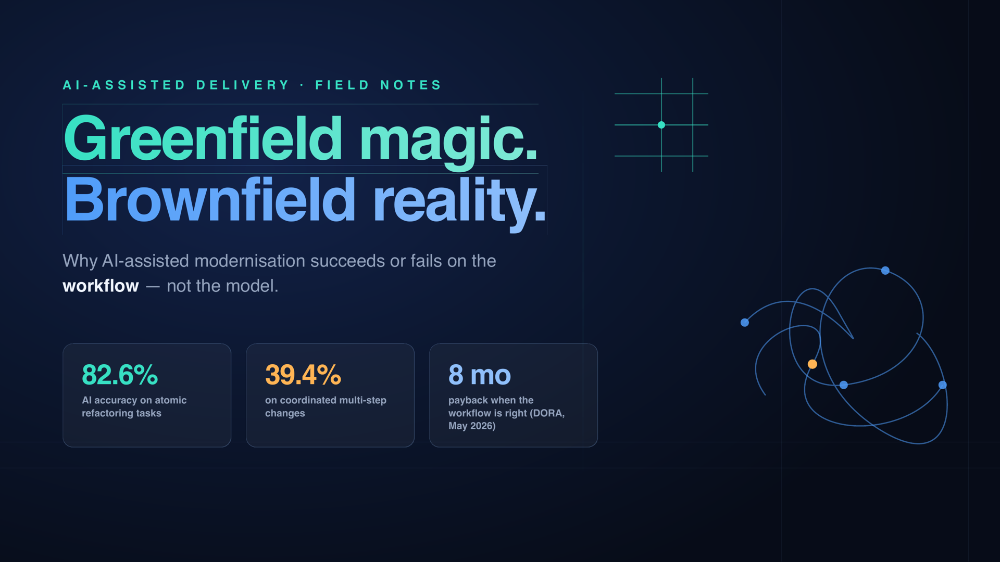
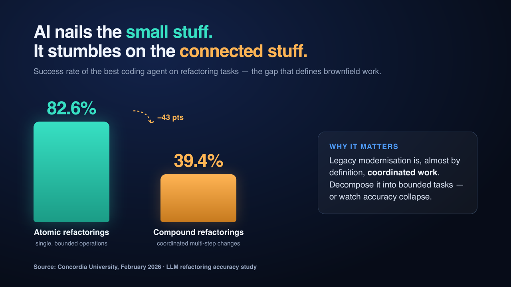
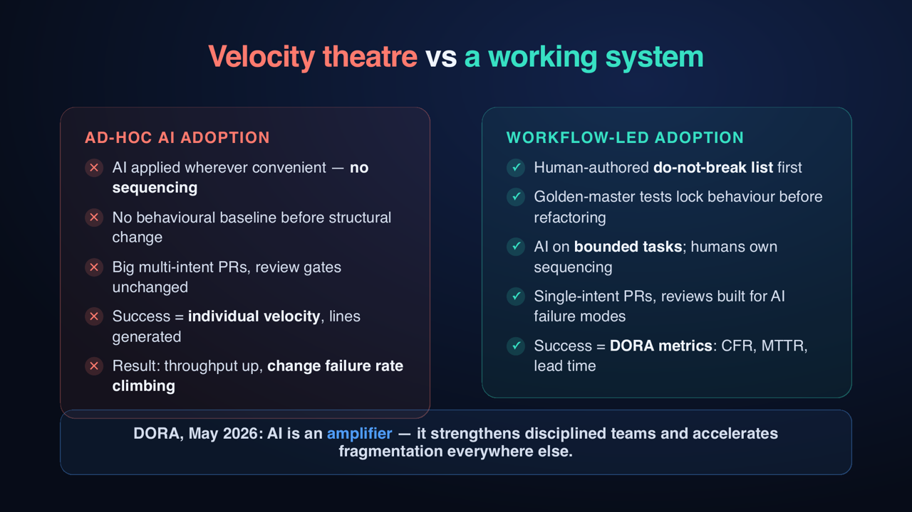

The same AI that builds a working greenfield application before lunch can spend three weeks going in circles inside a nine-year-old codebase.
I have watched both happen. Same models, same tools, same engineers. And "going in circles" is not an exaggeration. The agent's fix passes every unit test, then breaks something downstream that nobody documented. The next fix breaks it again, in a different way. Why? Because the rule it keeps breaking was never written down anywhere. It lived in the head of an engineer who left years ago.
I work with AI coding tools every single day, on both new builds and legacy modernisation. And the more I use them, the more one thing becomes clear: the difference between success and failure is not the AI. It is everything around the AI.
On greenfield projects, AI tools feel like magic, and honestly, a lot of it is real. There is no history to respect. No undocumented behaviour to protect. No ten years of business logic hidden inside stored procedures. The AI generates, you review, you ship. The speed is real, because the thing that kills speed — context — does not exist yet.
Brownfield is a different planet. A large legacy system is not just "code". It is thousands of decisions, made over many years, by people who mostly left. Nobody remembers why half of it works the way it does. But everything depends on it.
There is also a simple technical reason why AI struggles here. A model can only see a limited context window — a few hundred thousand tokens. A nine-year-old system is tens of millions. So no matter how good the model is, every prompt sees the system through a keyhole. It cannot see the connection it is about to break, because that connection lives outside its view. Greenfield work fits through the keyhole. Brownfield work does not. (If you want a deeper version of this argument, this piece on why AI can't handle your legacy codebase is a good read.)

The research now confirms what anyone who tried this already knows. A Concordia University benchmark (SWE-Refactor, February 2026) measured exactly where AI breaks. The best coding agent in the study solved 82.6% of atomic refactoring tasks — single, bounded operations like rename this, extract that. On compound refactorings — changes that must be coordinated across the system — it dropped to 39.4%. And that was the best agent. The others did worse.
That is not a tooling problem you can patch. It is simply what the technology is today: excellent at bounded work, unreliable at connected work. And legacy modernisation is connected work, almost by definition.
One more useful data point. Thoughtworks' Technology Radar gave "GenAI for understanding legacy systems" its highest "Adopt" rating, and Martin Fowler's team wrote up how they use it — in one case cutting reverse-engineering from six weeks to two per module. Note what they use it for: understanding the legacy system, not blindly rewriting it. That distinction is the whole game.
Across large programmes, the failure pattern is very consistent. And the dangerous part is, it never looks like failure at the start. It looks like success:
I call this velocity theatre: every individual developer is genuinely faster, while the system gets slower and riskier. Google's DORA research found the same pattern at scale in its 2025 report: AI adoption now correlates with higher delivery throughput and higher delivery instability at the same time. More ships, more breaks.
GitClear's analysis of 211 million changed lines shows what is happening underneath: between 2020 and 2024, copy-pasted code rose from 8.3% to 12.3% of changes, while moved code — their measure of refactoring — fell from about 25% to under 10%. In simple words: we are all writing more and cleaning up less. On a greenfield repo you can get away with that for a while. On a brownfield estate, it grows exactly the debt you came to remove.
The teams I have seen truly succeed — change failure rate going down while throughput goes up — all end up doing the same five things. Some planned it. Most learned it by getting burned.

1. Write the "do-not-break" list first, by hand. Public interfaces, regulatory rules, performance limits, integration contracts. This is knowledge that lives in people's heads — no tool can recover it from the code. And here is the part most teams miss: this list should not sit in a wiki. It goes into the AI's context, in every session, together with a short repo map and a conventions file. You are not only briefing your team anymore. You are briefing the tool, every day.
2. Capture the system's behaviour before changing its structure. Lock in what the system does — including the strange parts — before anyone, human or AI, changes what it is. On systems with no real tests, this means: characterisation tests generated from production traffic, shadow runs where old and new code run side by side and you compare the outputs, and snapshot tests for generated documents and reports. I spent many years in enterprise content management, and on a twenty-year-old document platform, the "strange parts" usually are the business logic. Capture them or lose them. Most failed AI modernisations I have looked at skipped this step. All of them regretted it.
3. Give the AI bounded tasks. Keep the sequencing with humans. "Bounded" means something specific: one module, one intent, a diff small enough that a reviewer can hold it in their head — a few hundred lines, not a few thousand — with the do-not-break list in the prompt, and CI tests as a gate the AI must pass before any human looks at it. The AI succeeds when the whole task fits inside its view. It fails when correctness depends on something outside its view. Decisions about what to modernise, in what order, behind which API boundary — those stay with engineers. The old strangler-fig pattern matters even more now, because it creates exactly the small, bounded pieces that AI is good at.
4. Redesign code review for how AI actually fails. AI does not fail like a junior developer. It fails confidently: clean-looking code, correct style, wrong assumptions. So: single-intent PRs, limits on diff size, and reviewers who know what to look for — invented dependencies, logic that looks right but isn't. One published case study describes PR cycle time drifting from 6 days to 19 because AI output volume overwhelmed an unchanged review process; moving to single-intent PRs with a tiered review brought it back to 7 days and tripled deployment frequency. I have watched the same curve, with different numbers, more than once.
5. Measure the system, not the developer. Track DORA metrics — change failure rate, recovery time, lead time. Not lines generated, not "AI acceptance rate". If individual velocity is going up while system health is flat or falling, you are watching velocity theatre. Stop celebrating and fix the workflow.
To be clear, none of this is an argument against AI-assisted modernisation. The opposite. Done properly, the economics are very good. DORA's AI ROI research (May 2026) modelled a 500-person engineering organisation: about 39% return in the first year, with an eight-month payback, and it compounds after that.
But the same research is honest about the shape of the curve. There is a J-curve: a real dip at the start, from the learning curve, from the "verification tax" of reviewing AI output, and from process changes downstream. The organisations that panic during the dip and abandon the structure are exactly the ones that never see the upside.
And I like how that research frames the return. It is not about how many developers you can replace — coding is only about a quarter of what developers actually do. It is about how much skilled human attention you can move from boring work to judgement.
DORA's main finding, two years in a row, is that AI is an amplifier of whatever organisation it lands in. So:
Buy the discipline before the licences. If your AI tooling budget has no line for behavioural baselining, dependency-map validation and review redesign, then what you have actually budgeted for is velocity theatre.
Judge progress by boring numbers. Change failure rate. Recovery time. Duplication trend. The teams that win with AI are — honestly, a bit disappointingly — the teams that were disciplined before AI. The technology has not changed that. It has raised the stakes.
The companies that modernise successfully in the next three years will not be the ones with the best model subscriptions. They will be the ones that treated the workflow as the product — and treated the AI as what it really is: a colleague who types at four hundred words a minute, never says "I'm not sure", and is wrong just often enough to matter.
If you are running one of these programmes, especially on a brownfield estate — where is the workflow breaking for you?
The same AI that builds a greenfield app before lunch can spend three weeks going in circles in a nine-year-old codebase. I've watched both happen — same models, same engineers. The research now explains it: in a February 2026 Concordia benchmark, the best coding agent solved 82.6% of atomic refactoring tasks — and only 39.4% of coordinated multi-step ones. AI is brilliant at bounded work and unreliable at connected work. Legacy modernisation is connected work. I've written up what I keep seeing on large AI-assisted programmes — velocity theatre, behavioural baselining, the J-curve, and why the workflow (not the model) is the product. Full article below. If you're running one of these programmes: where is the workflow breaking for you? #AIEngineering #LegacyModernization